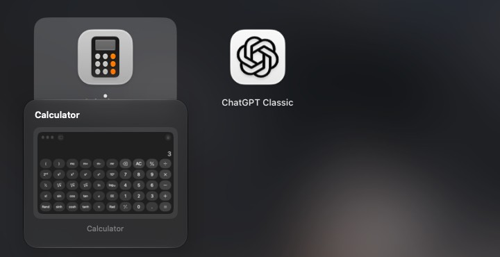
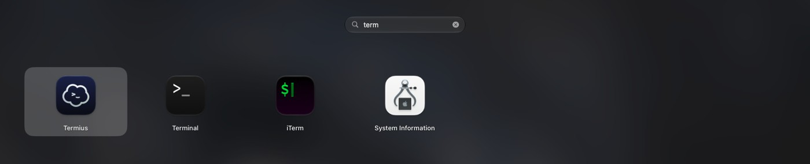
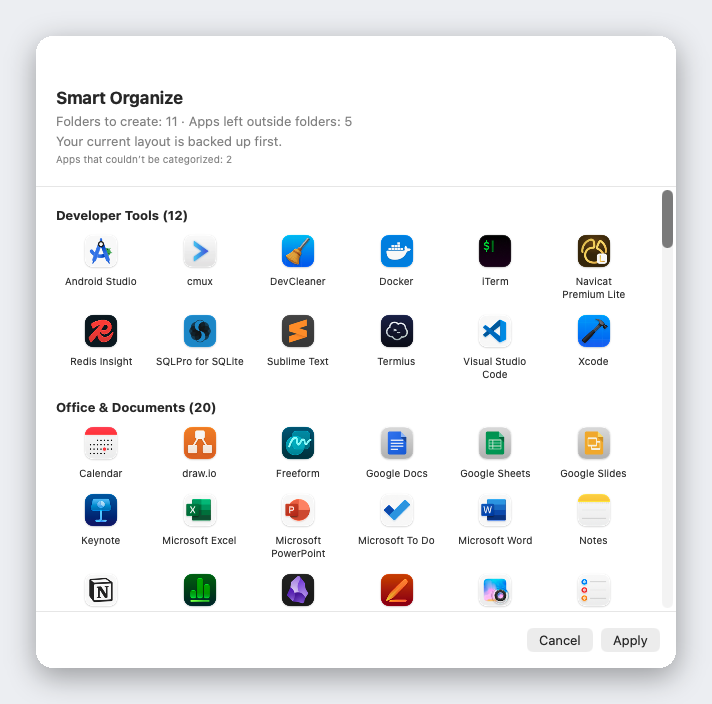

The Launchpad macOS 26 took away. Back — and faster.
A free, open-source launcher with live window previews and one-click Smart Organize.
Free · Open source (GPLv3) · Offline by default · 13 languages
Everything you loved. Plus what was missing.
Live window previews
Rest the pointer on a running app and its windows appear as thumbnails. Click one to jump straight to that window — even minimized ones or windows on other desktops.

Search apps and windows
Type a few letters. Liftoff matches app names, initials (vsc → Visual Studio Code), pinyin, and the titles of your open windows.

Smart Organize
One click sorts all your apps into sensible folders. Preview first, nothing changes until you apply, and your layout is backed up. Built-in table of 1,000+ popular Mac apps: no AI, no network, the same result every time.

Drag to the Dock
Drag an app straight from the grid into the Dock. Import your old Launchpad layout, or start fresh.
Built for speed
Opens in under 3 ms, never drops a frame while paging, and uses 0% CPU when idle.
Private by design
Liftoff makes no network connections unless you ask it to check for updates. Window thumbnails never leave your Mac, and every line of code is open for you to read.
Install in a minute
- Download Liftoff.zip and unzip it.
- Move Liftoff.app to your Applications folder.
- Open it. If macOS blocks it, go to System Settings → Privacy & Security and click Open Anyway.
- Allow Accessibility and Screen & System Audio Recording when asked. Thumbnails are processed locally only.
Requires macOS 26 or later. Builds are not notarized yet, so macOS asks you to re-enable permissions after each update.
Speaks your language
English, 繁體中文, 简体中文, 日本語, 한국어, Deutsch, Français, Español, Português, Italiano, Русский, Türkçe, Nederlands.